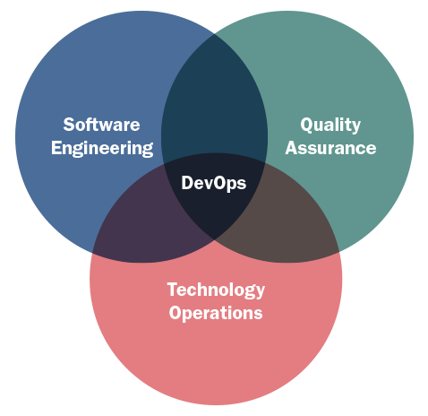

DevOps
Miguel Ángel García
http://magmax.org
Definición
DevOps es un acrónimo inglés de development (desarrollo) y operations (operaciones), que se refiere a una cultura o movimiento que se centra en la comunicación, colaboración e integración entre desarrolladores de software y los profesionales en las tecnologías de la información (IT). Automatiza el proceso de entrega del software y los cambios en la infraestructura. Su objetivo es ayudar a crear un entorno donde la construcción, prueba y lanzamiento de un software pueda ser más rápido y con mayor fiabilidad.
(Wikipedia)
¿Qué significa DevOps?
- DEV -> Development
- OPS -> Operations

Ciclo de vida clásico
| Negocio | Dev | Ops |
 |
||
| Innovación | Waterfall | Si funciona, no lo toques |
Ciclo de vida clásico
- Lenta respuesta a negocio
- Clientes descontentos
- UX pobre
- Reducida capacidad de competencia
- Recursos malgastados
- Pérdida de productividad
- Costes y riesgos altos
- Desarrolladores desmotivados
- tiempos de respuesta deficientes (seguridad)
Nuevo enfoque
| Negocio | Dev | Ops |
| Innovación | Scrum | Despliegue contínuo |
Nuevo enfoque
- Rápida respuesta a negocio
- Clientes más contentos
- La UX forma parte del ciclo
- Más competitividad
- Recursos mejor aprovechados
- Reducción de costes y riesgos
- Desarrolladores más motivados
- tiempos de respuesta rápidos
¿Cómo se consigue?

¿Cómo se consigue?
- Toda la compañía debe estar involucrada
¿Dónde está DevOps?
-

Objetivos de DevOps
- Producir Releases más pequeñas y frecuentes
- Reducir el esfuerzo y los riesgos asociados al desarrollo y operaciones
- Mejorar el Time to market
- Mejorar la calidad del código
- Mejorar la calidad de los despliegues
- Reducir los costes y esperas en las iteraciones del producto
- Crear una cultura de comunicación y colaboración
- Incrementar la productividad
3 caminos
- Camino 1: Mejorar las comunicaciones de Negocio a IT
- Camino 2: Mejorar el feedbackde IT a Negocio
- Camino 3: Cultura de experimentación y aprendizaje contínuos
Más información
- The Three Ways: The Principles Underpinning DevOps, by Gene Kim
- "The Devops Handbook: How to Create World-Class Agility, Reliability, and Security in Technology Organizations", by Gene Kim y otros
- "The Phoenix Project", by Gene Kim